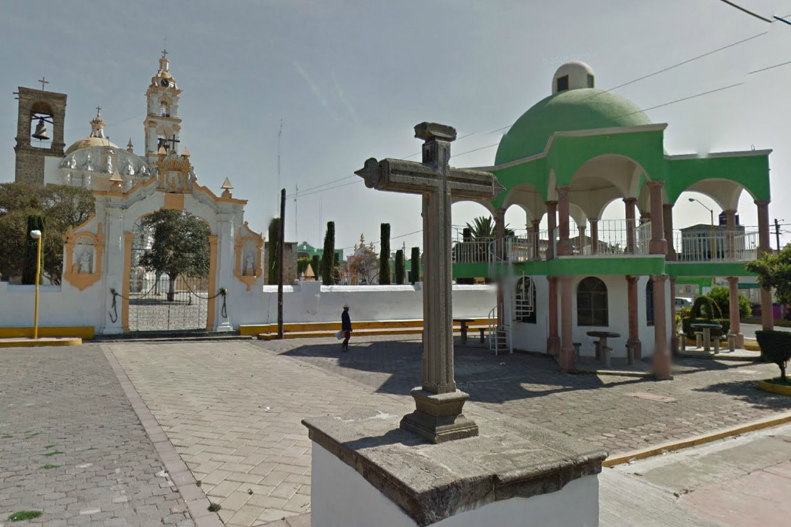
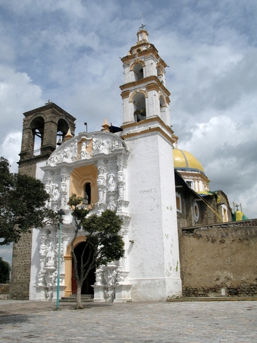

Municipios
Acuamanala fue una aldea prehispánica que se desarrolla a lo largo de 800-350 a.c. Debió ser un asentamiento planificado que observó ejes de orientación en su trazo, tener un sistema de control para las entradas y salidas de la población. Contó con plazas rectangulares donde se concentraron las pirámides. Éstas debieron bordear la plaza principal. También debió contar con plataformas bajas donde se ubicaron las residencias importantes. La Colonia: Una vez concluida la conquista, Acuamanala quedó integrada a la Provincia de Tlaxcala, una república de indios gobernada por un Cabildo desde su ciudad capital, lo que le dio derecho a formar parte del cuerpo de electores compuesto por 220 personas. Es probable que Acuamanala haya sido un mayorazgo que en la parte final de la época prehispánica forman parte del señorío de Tepeyanco. La Independencia: Acuamanala observó durante un largo periodo la lucha entre federalistas y centralistas.
Asistió a la incorporación de Tlaxcala como departamento del estado de México y nuevamente como Territorio de la federación. La Reforma: Acuamanala prestó el concurso de sus hijos en las filas liberales y en defensa de la soberanía, sosteniendo el gobierno de Benito Juárez. El Porfiriato: Vecinos de los diferentes poblados del municipio de Teolocholco, entre ellos el de Acuamanala, solicitaron al gobierno del estado el desconocimiento de la elección de autoridades municipales que se acababan de efectuar por considerarlas fraudulentas, mientras que otro grupo las consideraba como sólidas. Este último grupo estaba vinculado al gobernador y al Congreso local.La Revolución Mexicana: Durante la administración del general Adolfo Bonilla las localidades de Ayometitla, Chimalpa, Quilehtla y el rancho del Espíritu Santo fueron segregados del municipio de Teolocholco, para formar el municipio de Miguel Hidalgo con cabecera en Acuamanala.
Parroquia de San Antonio.- Su construcción data del siglo XVIII, es de estilo barroco y está dedicado a San Antonio de Padua, con portada en argamasa, aún conserva su barda atrial con pináculos y portada de acceso, lápidas en piedra de finales del siglo XIX y principios del siglo XX. La fachada principal es de aplanado blanco, los muros y las cubiertas están hechas en piedra, el ancho de los muros es de 1.20 mts, la forma de la cubierta es abovedada. Rancho Espíritu Santo.- Se construyó durante los siglos XVIII y XIX y actualmente está en ruinas, conservándose sólo algunos muros, donde se aprecia la distribución de espacios; las habitaciones y la troje conforman un patio central. Los materiales de construcción de muros fueron: adobe y piedra de 10x50x80 cm, y un sistema mixto de adobe y piedra con marcos de puertas forjados en ladrillo.
Estado de Tlaxcala
| Estado | Tlaxcala |
| Población | 6 577 hab. |
| Municipios de Tlaxcala | |
| Superficie | 4 440 km |
| Claves Larga Distancia | |
| Mapa de Estado | |
| Carreteras | |
| Youtube | |
| Información valiosa | |
| Embajadas Extranjeras | |
| Embajadas de México | |
| Servicios Turiisticos: |